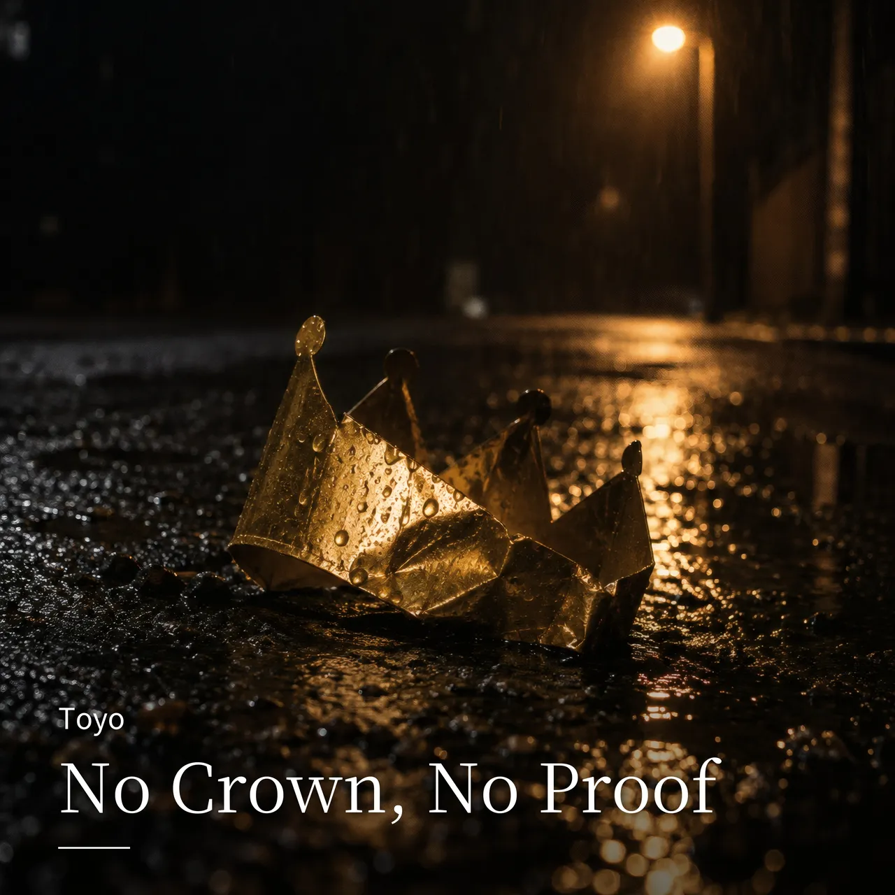

全曲 / No Crown, No Proof

LYRICS
また言ってるって また笑ってる うん、知ってる 通知表の端 赤い丸より空欄 朝練の靴 新品のまま玄関 テスト前だけ机 開いて満足 三日目にはゲーム 才能だけが満タン 好きって言えずに 卒業アルバム 告白の下書き 送信前に削除 バイトのシフト 遅刻して謝罪 始めたノートは だいたい二ページで終わり 友達の近況 昇給 結婚 内定 俺の近況？ まだ同じ画面 口ではデカい 実績はゼロ 鏡の前で言う「次こそ」も聞き飽きた また言ってる また言ってる その笑い声 今も耳に残ってる 何者でもない それは事実 だから何？ 終わりの証拠じゃない 静かにしろ 名前もない 肩書きもない でもこの胸の奥だけ まだ消えてない まだ終われない まだ終われない 何者でもないが まだ終われない また言ってる？ そう、また言ってる 口だけの俺が 今夜ここで変わる No crown, no proof まだ終われない No crown, no proof まだ終われない 置いてく電車 ホームで見送る 置いてく仲間 画面越しに祝う 「すごいな」って打って スマホ伏せる 祝福の裏で 歯を食いしばる 履歴書の空白 増えた分だけ重い 面接の帰り コンビニで水 落ちた理由なら いくらでも浮かぶ 浮かぶだけで 何ひとつ掴めない 部屋の隅 買ったままの参考書 ケースの中 弾かれないギター 始めた証拠だけ きれいに並ぶ 続けた証拠は どこにもない でもな 笑った奴らだけが敵じゃない 「どうせ無理」って先に座る俺がいる そいつの声を 今日はミュート 過去の俺ごと この低音で踏む 早口 空回り 空白 再開 敗北 退会 大体 同じ界隈 何回 失敗？ 数えたって無駄 ゼロから吠える ゼロは軽くない 息を吸え まだ何もない だから奪われない 笑われた言葉を 今度は刃にする まだ終われない まだ終われない 何者でもないが まだ終われない また言ってる？ そう、また言ってる 口だけの俺が ここから黙らせる No crown, no proof まだ終われない No crown, no proof まだ終われない 成功談じゃない 今は途中 拍手もない 証明もない それでも目だけは 前より悪い いや、違う 前より鋭い 誰かを超える？ それも違う 超える相手は 昨日の俺 「どうせ無理」と 布団に沈んだ あの目を起こす 今ここで まだ終われない まだ終われない 何者でもないが まだ終われない また言ってる？ そう、また言ってる 笑われるたびに 声が太くなる まだ終われない まだ終われない 結果はないけど 目は逸らさない No crown, no proof それでも立ってる No crown, no proof まだ終われない 名前はない 実績もない でも、終わってない まだ終われない
NEXT
次に聴くなら


FOLLOW
新曲を、いちばん早く。
Spotify でフォローすると、新曲が「Release Radar」に自動で届きます。